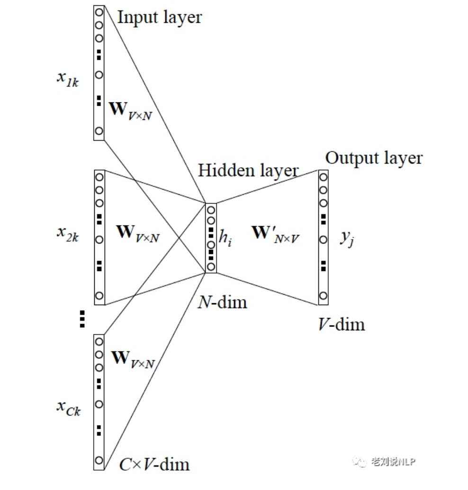
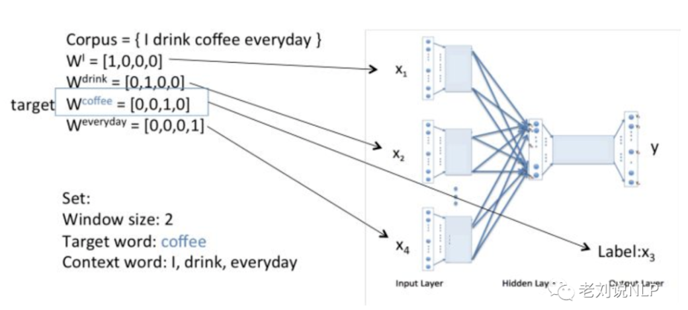
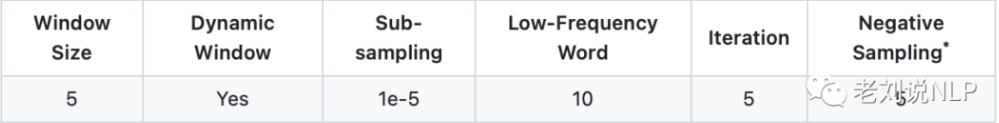
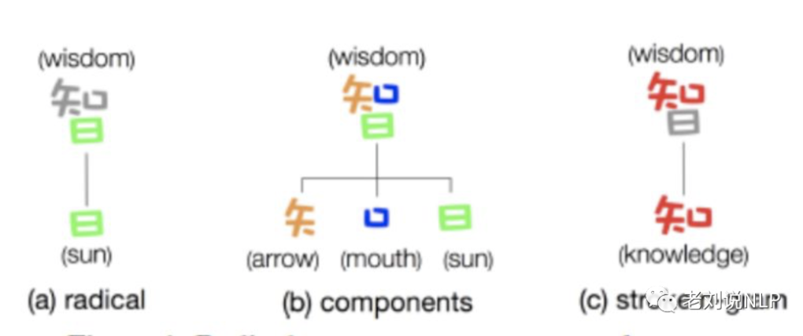
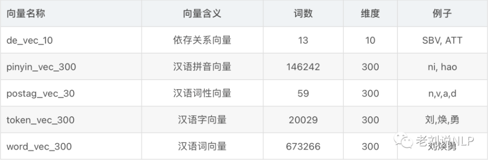
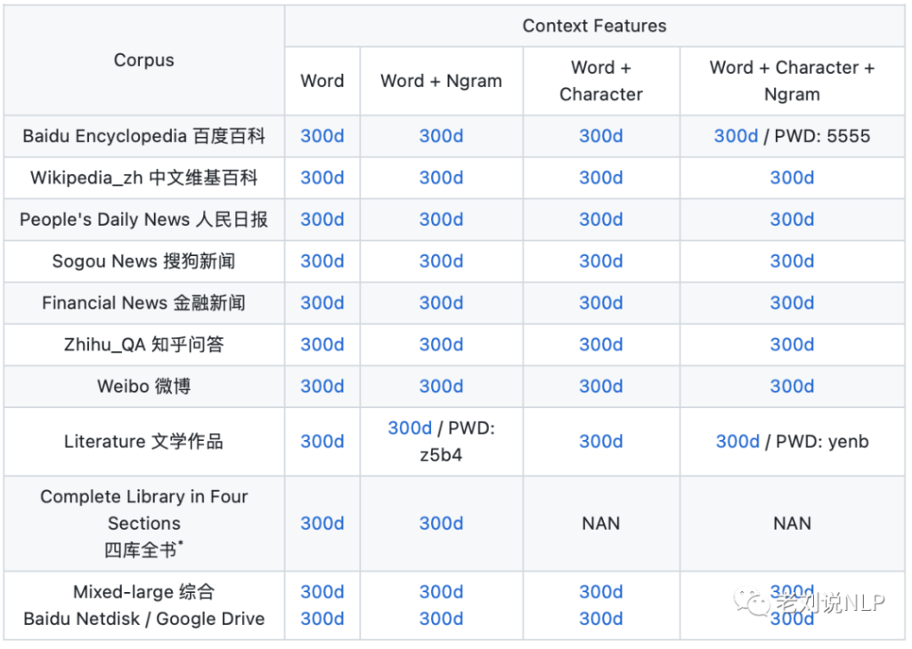

关于作者
刘焕勇，liuhuanyong，现任360人工智能研究院算法专家，前中科院软件所工程师，主要研究方向为知识图谱、事件图谱在实际业务中的落地应用。
得语言者得天下，得语言资源者，分得天下，得语言逻辑者，争得天下。
- 个人主页：https://liuhuanyong.github.io
- 个人公众号：老刘说NLP
当前，以预训练语言模型PLM+fintune的自然语言处理范式可谓十分火热，有大量的文章在宣传这类方法，包括梳理以NNLM为起点的整个预训练方法的发展史。
当前工业界，主要使用的预训练模型包括两种，一种是以wordvec为代表的预训练词向量，另一种是以BERT为代表的预训练语言模型。前者通常作为词语表示输入的初始化，后接NN/CNN/LSTM等编码层，后者既可以同样后接，也可以直接接上softmax/crf/span-pointer等进行解码。
本文，主要围绕预训练词向量模型这一主题，对当前预训练词向量模型的常用方法、评估与应用方式、领域的迁移变体、当前开放的训练工具和词向量文件进行介绍，并以word2vec和fasttext为例，展示一个词向量训练的案例，做到理论与实践相结合。
一、预训练词向量模型方法
自从进入2010年以来，神经语言模型就逐渐进入人们眼球，以NNLM为典型最初代表的神经网络模型，极大的推动了NLP这一领域的发展。
实际上，早期词向量的研究通常来源于语言模型，比如NNLM和RNNLM，其主要目的是语言模型，而词向量只是一个副产物。著名的harris分布式假说提供了一个局部统计信息的理论基础。
下面就选择其中三种典型进行介绍。
1.1 word2vec
word2vec是2013年Google开源的一款用于词向量计算的工具，通过内置的语言模型训练目标，可以将中间层得到的向量权重矩阵进行抽离，形成每个词对应的向量化表示，包括CBOW、Skip-gram两种方式，前者通过周围词来预测中心词，后者以中心词来预测上下文。

经典的wordvec结构包括输入层、隐藏层和输出层，其计算流程为：
1、输入层存储上下文单词的onehot。假设单词向量空间dim为V，上下文单词个数为C。
2、所有onehot分别乘以共享的输入权重矩阵W。V*N矩阵，N为自己设定的数，初始化权重矩阵W 。
3、所得的向量 相加求平均作为隐层向量, size为1*N。
4、乘以输出权重矩阵W' N*V。
5、得到向量1*V，经过激活函数处理得到V-dim概率分布。
6、Hierarchical Softmax分类，概率最大的index所指示的单词为预测出的中间词与预测值的onehot做比较，根据误差更新权重矩阵。

这个W矩阵就是所有单词的word embedding，任何一个单词的onehot乘以这个矩阵都将得到自己的词向量。
通常，在训练词向量时候，会根据语料的大小来选择相应的训练方法。例如，针对小型的数据集，可以用CBOW算法，该方法对于很多分布式信息进行了平滑处理，将一整段上下文信息视为一个单一观察量，对于小型的数据集，这一处理是有帮助的。相比之下，大型数据集，可以用Skip-Gram模型，该方法将每个“上下文-目标词汇”的组合视为一个新观察量，这种做法在大型数据集中会更为有效。
1.2 fasttext
fastText是Facebook于2016年开源的一个词向量计算和文本分类工具。将整篇文档的词及n-gram向量叠加平均得到文档向量，然后使用文档向量做softmax多分类。包括字符级n-gram特征的引入以及分层Softmax分类两种。
与CBOW一样，原本的fastText模型包括输入层、隐含层、输出层，输入都是多个经向量表示的单词，输出都是一个特定的目标，隐含层都是对多个词向量的叠加平均。不同的是，CBOW的输入是目标单词的上下文，fastText的输入是多个单词及其n-gram特征，这些特征用来表示单个文档，CBOW的输入单词被onehot编码过，fastText的输入特征是经embedding化的，CBOW的输出是目标词汇，fastText的输出是文档对应的类标。
而如果将该类标替换成中间目标词，那么就可以得到wordvec的升级版，即单纯的词向量模型。例如，word2vec把语料库中的每个单词当成原子的，它会为每个单词生成一个向量。这忽略了单词内部的形态特征。
fasttext使用了字符级别的n-grams来表示一个单词。对于单词“apple”，假设n的取值为3，则它的trigram有“<ap”, “app”, “ppl”, “ple”, “le>”，其中，<表示前缀，>表示后缀。于是，我们可以用这些trigram来表示“apple”这个单词，进一步，可以用这5个trigram的向量叠加来表示“apple”的词向量。
因此，因为它们的n-gram可以和其它词共享，对于训练词库之外的单词，能够解决或者oov词，这也是在当前很多文本分类、推荐场景中会优先选用fastText作为训练方法。
1.3 Glove
GloVe是斯坦福团队于2014年提出一个词向量方法，全名叫“Global Vectors”，直接利用全局的统计信息进行训练。
与上述两种方式靠滑动窗口来制造局部上下文不同，GloVe会用到全局的词语之间共现的统计信息，即词的出现次数，词对之间的共现概率，形成共现概率矩阵，并试图生成词向量来毕竟共现概率，利用Word2Vec的skip-gram算法的高性能来解决LDA的计算量复杂问题。
因此，我们可以发现，Glove需要事先统计共现概率，这也让其通常被认为是无监督学习，实际上glove还是有label的，即共现次数。与wordvec还有一处不同的是，损失函数是最小平方损失函数，权重可以做映射变换。
二、预训练词向量的训练参数
词向量模型的超参数很多，不同的参数选择会取得不同的效果，并且，word2vec中有几个大家提的比较多的问题。以gensim-word2vec为例，包括以下参数：
- sentences： 可以是一个list，对于大语料集，可使用BrownCorpus,Text8Corpus或LineSentence构建；
- sg： 用于设置训练算法，默认为0，对应CBOW算法；sg=1则采用skip-gram算法；
- size： 特征向量的维度，默认为100。大的size需要更多的训练数据,但是效果会更好. 推荐值为几十到几百；
- window： 表示当前词与预测词在一个句子中的最大距离是多少；
- alpha: 学习速率；
- seed： 用于随机数发生器。与初始化词向量有关；
- min_count: 可以对字典做截断. 词频少于min_count次数的单词会被丢弃掉, 默认值为5；
- max_vocab_size: 设置词向量构建期间的RAM限制。如果所有独立单词个数超过这个，则就消除掉其中最不频繁的一个。每一千万个单词需要大约1GB的RAM。设置成None则没有限制；
- sample: 高频词汇的随机降采样的配置阈值，默认为1e-3，范围是(0,1e-5)；workers参数控制训练的并行数；
- hs: 如果为1则会采用hierarchical softmax技巧。如果设置为0（defaut），则negative sampling会被使用；
- negative: 如果>0,则会采用negativesamping，用于设置多少个noise words；
- cbow_mean: 如果为0，则采用上下文词向量的和，如果为1（defaut）则采用均值。只有使用CBOW的时候才起作用；
- hashfxn： hash函数来初始化权重。默认使用python的hash函数；
- iter： 迭代次数，默认为5；
- trim_rule： 用于设置词汇表的整理规则，指定那些单词要留下，哪些要被删除。可以设置为None（min_count会被使用）或者一个接受()并返回RUE_DISCARD,utis.RUE_KEEP或者utis.RUE_DEFAUT的函数；
- sorted_vocab： 如果为1（defaut），则在分配word index 的时候会先对单词基于频率降序排序；
- batch_words： 每一批的传递给线程的单词的数量，默认为10000。
不过，如此多的参数不一定能跳得过来，因此通常会集中在以下常规参数：

三、预训练词向量的评估与应用
预训练词向量生产出来，需要进行性能的评估。这方面的方法包括基于评测集，或者基于具体业务使用，用业务的指标来进行评估。
3.1 预训练词向量的评估
学术上，词向量的质量通常由类比问题任务进行评估。如CA-translated包含了三个语义问题和134个中文词。CA8 是专门为中文语言设计的。它包含了 17813 个类比问题，覆盖了综合的词法和语义关联。
工业，则使用词向量来代替之前随机生成的词向量文件，来对自然语言处理中的文本/情感分类、实体识别、关系抽取等任务进行评估。
3.2 预训练词向量的应用
预训练词向量文件最大的价值在于解决了一个词语的初始化稠密表示，在解决当前以数值化为输入的深度或机器学习模型第一部的同时，还保留了一个词的区别性特征。
一方面，当前词向量可以用于近义词挖掘的重要来源，通过某个词，通过计算词与其他词之间的相似度，并设定阈值，可以迭代挖掘出大量的相关词【过程中要注意语义漂移】。而这个词，直接就可以用于当前的搜索查询扩展、领域词构建等场景。进一步的，在模型方面，还可以作为EDA数据增强工作中的重要补充。
另一方面，词向量可以用于当前无监督文本表示的重要方法，通过对文本进行分词，然后找到词语对应的向量，通过向量叠加的方式可以快速得到一个文本的向量表示，这一表示在诸如情感分析、句子相似度计算等任务中是实际有效的，基于文本表示，也可以进一步提升文本分类、聚类、相似query召回等使用场景性能，甚至很形象的成为了当前业务模型的baseline或者兜底模型。
四、预训练词向量的变体延伸
4.1 gramEmbedding
共现信息，是cbow以及skipgram的基础，其本质在于通过周围词来建模中心词或者用中心词来建模周围词。因此，通过构造不同的共现信息，可以得到不同类型的向量形式。这里取了个名字叫gramembedding，用于表示专指文本的一系列embedding变体。
例如，对于一个词来说，我们可以把词拆分为词word、n元序列ngram、汉字character，偏旁部首Radical，词性POS，依存关系dependency、拼音pinying。
单元的共现，我们同样可以进行组合，例如，构造word-word，word-ngram、ngran-ngram等，得到上下文特征（单词、n-gram、字符等）等不同粒度的词向量。
观察近几年的发展，词向量可以进一步分成偏旁部首向量、字符向量等。如香侬科技推出的glyce向量，引入汉字的字形特征。蚂蚁金服推出的cw2vec字符向量，将汉字拆解成偏旁、字件进行建模。

当ngram中的n为1时，可以得到字向量，n为2或者更多时，则可以得到词向量等。fasttext中，就是得到了ngram的向量，并进行加和，得到一个OOV词语的向量进行表示。
例如，基于skigram，分别设定词向量的维度及其他超参数，可以得到字向量,拼音向量，词向量，词性向量，通过上下文共现与PCA降维的方法可以得到依存向量。

从下面的结果可以看出，词和字向量的效果看起来还不错。
***********************字符向量************************
token:刘
('李', 0.7306396961212158),('陈', 0.7201231122016907)
('赵', 0.6974461674690247),('杨', 0.6972213983535767)
('吴', 0.6851627230644226),('徐', 0.6516467332839966)
('郭', 0.6499480605125427),('蔡', 0.6175302267074585)
('郑', 0.6092196106910706),('孙', 0.5950524210929871)
token:丑
('卯', 0.6074919700622559),('酉', 0.5910211801528931)
('巳', 0.5581363439559937),('戌', 0.43932047486305237)
('戊', 0.41449615359306335),('壬', 0.40456631779670715)
('謤', 0.367109090089798),('绯', 0.3643313944339752),
('寅', 0.36351141333580017),('旽', 0.3549465537071228)
***********************依存向量************************
dependency rel:ATT
('COO', 0.14239487051963806),('ADV', -0.16987691819667816)
('RAD', -0.2357601821422577),('HED', -0.2401314228773117)
('SBV', -0.25625932216644287),('WP', -0.27165737748146057)
('LAD', -0.2902592420578003),('POB', -0.2990782558917999)
('VOB', -0.37553706765174866),('IOB', -0.6669262647628784)
dependency rel:POB
('IOB', 0.16698899865150452),('DBL', 0.16678886115550995)
('FOB', 0.1657436639070511),('CMP', 0.14784857630729675)
('VOB', 0.1461176574230194),('SBV', 0.08011472970247269)
('LAD', -0.022307466715574265),('WP', -0.022942926734685898)
('HED', -0.037264980375766754),('RAD', -0.042251598089933395)
***********************拼音向量************************
pinyin:wo
('shei', 0.6129732131958008)('ta', 0.6081706285476685)
('nin', 0.5819231867790222),('！', 0.5435523986816406)
('……', 0.48428624868392944),('ai', 0.47832390666007996)
('o', 0.4761071801185608),('。』', 0.4598163366317749)
('...', 0.45207729935646057),('ni', 0.44975683093070984)
pinyin:guo
('dang', 0.3908974528312683),('yuan', 0.378823846578598)
('zu', 0.35387369990348816),('hua', 0.3405681848526001)
('zheng', 0.3355437219142914),('yi', 0.3333034813404083)
('ren', 0.3194104731082916),('jun', 0.3187354505062103)
('hui', 0.31342023611068726),('xin', 0.3096797466278076)
***********************词性向量************************
word postag:a
('d', 0.7203904986381531),('c', 0.6124969720840454)
('v', 0.4963228106498718),('an', 0.4531499147415161)
('uz', 0.4459834396839142),('ud', 0.42059916257858276)
('r', 0.4090540111064911),('uj', 0.4061364233493805)
('i', 0.38707998394966125),('l', 0.3551557660102844)
word postag:n
('b', 0.7030695676803589),('vn', 0.490166038274765)
('p', 0.4858315885066986),('v', 0.4499088227748871)
('nt', 0.44155171513557434),('f', 0.26609259843826294)
('s', 0.2639649212360382),('l', 0.24365971982479095)
('ns', 0.2278469204902649),('m', 0.202927365899086)
***********************词向量************************
word:爱情
('爱恋', 0.6931096315383911),('真爱', 0.6897798776626587)
('婚姻', 0.6540514826774597),('浪漫爱情', 0.6535360813140869)
('情感', 0.6501022577285767),('感情', 0.6403399705886841)
('纯爱', 0.6394841074943542),('爱情故事', 0.6282097101211548)
('校园爱情', 0.6078493595123291),('情爱', 0.5976818799972534)
word:创新
('技术创新', 0.7648976445198059),('不断创新', 0.7172579765319824)
('创新型', 0.6573833227157593),('创新能力', 0.6533682942390442)
('创新性', 0.6160774827003479),('革新', 0.6159394383430481)
('人才培养', 0.6093565821647644),('开拓创新', 0.6015594601631165)
('探索', 0.5987343788146973),('技术革新', 0.5949685573577881)
从上，也看到一些十分有趣的现象：
1）依存向量，依存向量中可以看出，ATT作为定中关系，在依存关系中属于定中结构，COO(联合)，ADV(状中)的相似度要比主谓SBV，动宾VOB的相似度要高。另外，作为介宾的POB，相似的有IOB，DBL，FOB，这些关系均与宾语成分相关
2）拼音向量，从wo，guo的拼音相似拼音来看，我们可以看到，这种相似的拼音更像是一种搭配， 很有意思，(词性参照jieba分词词性对照表)。
3）词性向量，从a，n的相似词性来看，也似乎更像是一种搭配现象，或许有更好的解释。
4.2 DomainEmbedding
为了更好的适配不同领域的任务，当前也有很多的公司或者任务会选择使用领域性的领域进行训练，以得到不同领域的词向量文件，这与当前各种领域的bert模型做法是类似的。当前出现了金融领域bert、法律领域的bert等。
代表性的，2018年推出的Chinese-Word-Vectors中提供了包含经过数十种用各领域语料（百度百科、维基百科、人民日报 1947-2017、知乎、微博、文学、金融、古汉语等）训练的词向量，涵盖各领域，且包含多种训练设置。

又如，当前PaddleNLP官方提供了61种可直接加载的预训练词向量，训练自多领域中英文语料、如百度百科、新闻语料、微博等，覆盖多种经典词向量模型（word2vec、glove、fastText）、涵盖不同维度、不同语料库大小。
4.3 GraphEmbdding
经典的deepwalk以及node2vec也是借鉴word2vec思想，学习图节点嵌入的方法。并且成为当前推荐系统中的一个重量级使用方法。
1、Deepwalk
通过对图中的节点进行随机游走（主要考虑深度优先遍历），形成节点之间的游走序列，并将其作为上下文，后面接入skipgram形成节点向量，从构造上来看，就是首先利用random walk来表示图结构，然后利用skip-gram模型来更新学习节点表示。
随机选取与其邻接的下一个结点，直至达到给定长度，这个长度作为一个参数进行指定，这个类似于word2vec中的window_size上下文窗口。

2、node2vec
node2vec综合考虑了广度优先遍历（用于捕捉局部信息）和深度优先遍历（用于捕捉全局信息）的游走，提出二阶随机游走思想，解决内容相似和结构相似的问题。

前者具有直接链接关系的两个节点，我们可以认为是内容相似的（例如两个灰色网站之间很有可能能够直接跳转，如图中的s1，s2等一阶邻居）、结构相似（例如周围邻居数量都很类似，如图中的s6和u节点，两个都有4个邻接，结构类似）。

具体实现思路也很简单：
我们从节点v转移到节点t，并且当前在节点t时，需要考虑下一个采样节点x。因此，可以设计一个节点到它的不同邻居的转移概率：

其中，每一步采样都会有三种状态，分别对应于上图的0，1，2三种情况：
- 1）0代表如果t和x相等，那么采样的概率为1/p；
- 2）1代表t与x相连，采样的概率为1；
- 3）2代表t与x不相连，采样的概率为1/q**
式子中的参数p作为返回参数，控制重新采样上一步已访问节点的概率。参数q，作为出入参数，控制采样的方向。
其中：
- 1）当q>1时，接下来采样的节点倾向于节点t，偏向于广度优先；
- 2）当q<1时，接下来采样的节点倾向于远离t，偏向于深度优先遍历。
- 3）当p>max(q,1)时，接下来采样的节点很大概率不是之前已访问节点，这一方法使得采样偏向深度优先；
- 4）当p<max(q,1)时，接下来采样的节点很大概率是之前已访问节点，这一方法使得采样偏向广度优先。
此外，在推荐场景中也有item2vec的类似延伸，例如协同过滤算法是建立在一个user-item的co-occurrence矩阵的基础上，通过行向量或列向量的相似性进行推荐。如果将同一个user购买的item视为一个context，就可以建立一个item-context的矩阵。进一步的，可以在这个矩阵上借鉴CBoW模型或Skip-gram模型计算出item的向量表达。
五、预训练词向量的动手实操
纸上得来终觉浅，觉知此事要躬行，能够动手实践是加强对该概念理解的重要方式。预训练词向量，在流程上，应该包括全量训练和增量训练两种。前者可以在有大规模训练语料的情况下得到领域的向量，后者适用于小语料微调。 下面以gemsim中的wordvec和fasttext为例进行实践，大家可以看出其中的一些具体的步骤和结果。
5.1 word2vec向量训练
1、构造训练语料
# coding = utf-8
import os
import jieba
import json
cur = '/'.join(os.path.abspath(__file__).split('/')[:-1])
class Trainvec:
def __init__(self):
self.filepath = os.path.join(cur, "lawsuit.json")
self.update_filepath = os.path.join(cur, "duanzi.txt")
return
def build_corpus(self):
i = 0
train_path = open(os.path.join(cur, "train.txt"), 'w+')
with open(self.filepath, 'r') as f:
for line in f:
i += 1
if not line.strip():
continue
if i % 100 == 0:
print(i)
json_obj = json.loads(line.strip())
content = json_obj["content"]
text = '\n'.join(content)
cut_wds = jieba.lcut(text)
train_path.write(' '.join(cut_wds) + '\n')
train_path.close()
return
def build_update_corpus(self):
i = 0
train_path = open(os.path.join(cur, "update.txt"), 'w+')
with open(self.update_filepath, 'r') as f:
for line in f:
line = line.strip()
i += 1
if not line.strip():
continue
if i % 100 == 0:
print(i)
cut_wds = jieba.lcut(line)
train_path.write(' '.join([i for i in cut_wds if i]) + '\n')
train_path.close()
return
if __name__ == '__main__':
handler = Trainvec()
#handler.build_corpus()
handler.build_update_corpus()
2、配置输入与输出路径
# -*- coding: utf-8 -*-
import os
import gensim
from gensim.models import word2vec
import logging
cur = '/'.join(os.path.abspath(__file__).split('/')[:-1])
filepath = os.path.join(cur, "train.txt")
update_filepath = os.path.join(cur, "update.txt")
model_path = "wordvec.model"
model_update_path = "wordvec_update.model"
model_vec_path = "wordvec.bin"
model_update_vec_path = "wordvec_update.bin"
3、全量数据预训练
def full_train_embedding():
num_features = 100
min_word_count = 3
num_workers = 4
context = 5
downsampling = 1e-3
# 获取日志信息
logging.basicConfig(format='%(asctime)s:%(levelname)s:%(message)s', level=logging.INFO)
# 加载分词后的文本，使用的是Text8Corpus类
sentences = word2vec.Text8Corpus(filepath)
# 训练模型，部分参数如下
model = word2vec.Word2Vec(sentences, workers=num_workers,
size=num_features, min_count=min_word_count,
window=context, sg=1, sample=downsampling)
#保存模型,除包含词-向量,还保存词频等训练所需信息
model.save(model_path)
#保存词向量文件,保存的模型仅包含词-向量信息
model.wv.save_word2vec_format(model_vec_path, binary=True)
return model
在保存过程中，存在两种方式，保存模型,除包含词-向量,还保存词频等训练所需信息，保存词向量文件,保存的模型仅包含词-向量信息。所以我们可以看到，词向量文件，确实是word2vec模型的副产物。
4、增量数据预训练
增量训练，主要解决在新的文本上进行训练，也可以引入一些新的词，但这个时候，需要考虑到min_count这一过滤条件。
def update_train_embedding():
# 获取日志信息
logging.basicConfig(format='%(asctime)s:%(levelname)s:%(message)s', level=logging.INFO)
# 加载新的训练数据
text = word2vec.LineSentence(update_filepath)
# 加载旧模型
model = word2vec.Word2Vec.load(model_path)
# 更新词汇表
model.build_vocab(text, update=True)
# 训练数据
model.train(text, total_examples=model.corpus_count, epochs=model.epochs) # epoch=iter语料库的迭代次数；（默认为5） total_examples:句子数。
# 保存模型，是分成两个来训练
model.save(model_update_path)
# 保存词向量文件
model.wv.save_word2vec_format(model_update_vec_path, binary=True)
return model
5、词向量结果测试
def test_model():
model = gensim.models.KeyedVectors.load_word2vec_format("wordvec.model.bin", binary=True)
while 1:
wd = input("enter an word:").strip()
res = model.most_similar(wd)
print(res)
return words
通过运行，我们可以得到如下查询结果：
enter an word:开心
[('高兴', 0.7237069606781006), ('有缘', 0.7097823619842529), ('开了花', 0.7021969556808472), ('玩得', 0.6799882650375366), ('快乐', 0.6698621511459351), ('不亦乐乎', 0.668710470199585), ('鉴宝', 0.6672042012214661), ('越聊', 0.6671714782714844), ('爱玩', 0.6659203767776489), ('着迷', 0.6657696962356567)]
enter an word:混蛋
[('享福', 0.9413065910339355), ('没良心', 0.9331107139587402), ('怪不得', 0.9317291975021362), ('养不活', 0.9283043742179871), ('好惨', 0.9255991578102112), ('看笑话', 0.9251411557197571), ('逗我', 0.9232471585273743), ('命苦', 0.9226915836334229), ('别怪', 0.921725332736969), ('我养', 0.9205465316772461)]
enter an word:巴嘎
KeyError: "word '巴嘎' not in vocabulary"
从上面我们可以看到，wordvec中对于词表外的词是无法查询的，为了缓解这一问题，可以通过训练时候的min_count参数调至1，以覆盖更多的词语，另一种则是进行增量训练。
5.2 fasttext向量训练
与wordvec类似，fasttext也才用了类似的训练方法。
1、全量数据训练
def full_train_embedding():
feature_size = 100
window_size = 5
min_count = 3
workers = 4
corpus_file = datapath(filepath)
logging.basicConfig(format='%(asctime)s:%(levelname)s:%(message)s', level=logging.INFO)
model = FastText(size=feature_size, min_count=min_count, window=window_size, workers=workers)
model.build_vocab(corpus_file=corpus_file)
model.train(
corpus_file=corpus_file, epochs=model.epochs,
total_examples=model.corpus_count, total_words=model.corpus_total_words
)
model.save(model_path)
#保存词向量文件,保存的模型仅包含词-向量信息
model.wv.save_word2vec_format(model_vec_path, binary=True)
2、增量数据训练
def update_train_embedding():
# 获取日志信息
logging.basicConfig(format='%(asctime)s:%(levelname)s:%(message)s', level=logging.INFO)
# 加载新的训练数据
text = word2vec.LineSentence(update_filepath)
# 加载旧模型
model = FastText.load(model_path)
# 更新词汇表
model.build_vocab(text, update=True)
# 训练数据
model.train(text, total_examples=model.corpus_count, epochs=model.epochs) # epoch=iter语料库的迭代次数；（默认为5） total_examples:句子数。
# 保存模型，是分成两个来训练
model.save(model_update_path)
# 保存词向量文件
model.wv.save_word2vec_format(model_update_vec_path, binary=True)
return
3、词向量结果测试
def test_model():
model = FastText.load(model_path)
while 1:
wd = input("enter an word:").strip()
res = model.wv.most_similar(wd)
print(res)
return
通过执行，我们会得到以下查询结果：
enter an word:开心
[('开心果', 0.7953568696975708), ('高兴', 0.7377268671989441), ('郡县', 0.6981974244117737), ('有缘', 0.6916821002960205), ('折勾以', 0.687650203704834), ('爱', 0.684776782989502), ('愉快', 0.6840348243713379), ('快乐', 0.676334023475647), ('太高兴', 0.6728817224502563), ('放心', 0.6692144274711609)]
enter an word:混蛋
[('侯希辰', 0.7582178115844727), ('舐', 0.7578023672103882), ('走眼', 0.7541716694831848), ('有眼', 0.7511969804763794), ('贺应勤', 0.7478049397468567), ('罗敏', 0.747008204460144), ('郭守桥', 0.7450246810913086), ('熊芳琴', 0.7417726516723633), ('找死', 0.741632342338562), ('许身', 0.7414941787719727)]
enter an word:巴嘎
[('陈晓大爆', 0.3896751403808594), ('董王勇', 0.36747634410858154), ('李刚', 0.34988462924957275), ('曾杰', 0.34452974796295166), ('张文宾', 0.3370075821876526), ('成浩', 0.3369928300380707), ('刘晓静', 0.3348349630832672), ('刘晓丹', 0.3348219394683838), ('刘骏', 0.32817351818084717), ('吴建明', 0.32765522599220276)]
与上面的wordvec无法处理OOV问题不同，对于八嘎这一词，fasttext依旧可以推断出来，关于这个中间步骤，我们可以作为单独一个问题来说明。
4、fasttext是如何解决oov问题的
通过对其源码进行阅读，可以发现fasttext针对OOV词的原始计算方式包括三个步骤，
- 1）抽取出每个词的N-grams;
- 2）与预先存好的n-grams词库进行匹配;
- 3）将匹配到的n-gram向量进行平均，实现如下：
from gensim.models.utils_any2vec import _save_word2vec_format, _load_word2vec_format, _compute_ngrams, _ft_hash
def compute_ngrams(word, min_n, max_n):
BOW, EOW = ('<', '>') # Used by FastText to attach to all words as prefix and suffix
extended_word = BOW + word + EOW
ngrams = []
for ngram_length in range(min_n, min(len(extended_word), max_n) + 1):
for i in range(0, len(extended_word) - ngram_length + 1):
ngrams.append(extended_word[i:i + ngram_length])
return ngrams
def word_vec(self, word, use_norm=False):
if word in self.vocab:
return super(FastTextKeyedVectors, self).word_vec(word, use_norm)
else:
# from gensim.models.fasttext import compute_ngrams
word_vec = np.zeros(self.vectors_ngrams.shape[1], dtype=np.float32)
ngrams = _compute_ngrams(word, self.min_n, self.max_n)
if use_norm:
ngram_weights = self.vectors_ngrams_norm
else:
ngram_weights = self.vectors_ngrams
ngrams_found = 0
for ngram in ngrams:
ngram_hash = _ft_hash(ngram) % self.bucket
if ngram_hash in self.hash2index:
word_vec += ngram_weights[self.hash2index[ngram_hash]]
ngrams_found += 1
if word_vec.any():
return word_vec / max(1, ngrams_found)
else: # No ngrams of the word are present in self.ngrams
raise KeyError('all ngrams for word %s absent from model' % word)
例如，通过滑动窗口的方式，设定最短ngram和最长ngram，可以得到ngram集合。
>>> from gensim.models.utils_any2vec import *
>>> ngrams = compute_ngrams('好嗨哦',min_n = 1,max_n =3)
>>> ngrams
['<', '好', '嗨', '哦', '>', '<好', '好嗨', '嗨哦', '哦>', '<好嗨', '好嗨哦', '嗨哦>']
不过，可以看到的是，ngram中引入了“<”和“>”用于标记头和尾，这对于语言模型来说十分生动。
六、开源词向量训练工具与预训文件
不必重复造轮子，当前已经陆续出现了一些代表性的预训练词向量工具和词向量资源，我们可以充分利用好。
6.1 开源词向量训练工具
- ngram2vec： https://github.com/zhezhaoa/ngram2vec/
- word2vec： https://github.com/svn2github/word2vec
- fasttext： https://github.com/facebookresearch/fastText
- glove：https://github.com/stanfordnlp/GloVe
6.2 开源预训练词向量文件
- https://github.com/Embedding/Chinese-Word-Vectors
- https://github.com/liuhuanyong/Word2Vector
- https://github.com/liuhuanyong/ChineseEmbedding
七、本文总结
本文，主要围绕预训练词向量模型这一主题，对当前预训练词向量模型的常用方法、评估与应用方式、领域的迁移变体、当前开放的训练工具和词向量文件进行介绍，并以word2vec和fasttext为例，展示一个词向量训练的案例，做到理论与实践相结合。
关于预训练词向量相关的文章目前已经有很多，关于更为细致的解读，可以参考其他材料。预训练词向量是bert出现之前，NLP处理业务问题的标配，绝对称得上是一个里程碑的事件，并且开创了“万物皆可embdding”的时代。
实际上，词向量的发展也在一定程度上验证了当前nlp的进步。
由最开始的基于one-hot、tf-idf、textrank等的bag-of-words，到LSA（SVD）、pLSA、LDA的主题模型词向量，再到word2vec、fastText、glove为代表的固定表征，最后到当前elmo、GPT、bert为代表的基于词向量的动态表征，都说明了语义建模中的动态属性和文本语境的多样性。
不过，我们需要认识的是，在此类词向量中，虽然其本质仍然是语言模型，但是它的目标不是语言模型本身，而是词向量，其所作的一系列优化，其专注于词向量本身，因此做了许多优化来提高计算效率。
例如，与NNLM相比，word2vec将词向量直接sum，不再拼接，并舍弃隐层；考虑到sofmax归一化需要遍历整个词汇表，采用hierarchical softmax 和negative sampling进行优化，前者生成一颗带权路径最小的哈夫曼树，让高频词搜索路劲变小；后者对每一个样本中每一个词都进行负例采样。
最后，以当前一个新的观点来结尾：
现在的预训练语言模型是下一代知识图谱，那么预训练词向量是什么？垫底型相关词库？大家可以想想。
参考文献
- https://baijiahao.baidu.com/sid=1600509930259553151
- https://mp.weixin.qq.com/s/u8WZqlsIcGCU5BqPH23S4w
- https://www.jianshu.com/p/546d12898378/
- https://www.jianshu.com/p/471d9bfbd72f
- https://zhuanlan.zhihu.com/p/32965521
- https://mp.weixin.qq.com/s/DvbvYppeuMaPn84SRAINcQ